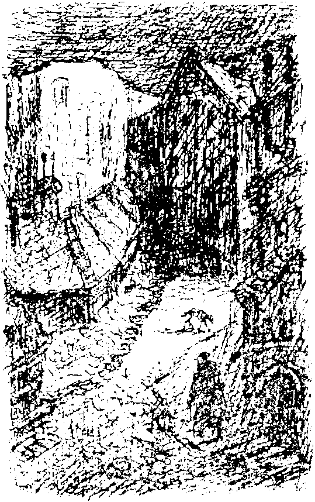

Kapının arkasında yoğun karanlık vardı. Nefes almayı güçleştiren sis kaybolmuştu, tatlı bir meltem esiyordu. Yakınlarda bir yerden düdük sesi ve düzensiz bir gürültü geliyordu. Artık kırmızı ve yeşil işaret ışıklarını da görebiliyorduk. Alçak bir binaya doğru ilerledik. Elinde fener olan adam, “İşte tren istasyonu,” diye açıkladı, “tam zamanında geldik.” Gişede bize Pearl için iki tane ikinci mevki tren bileti verdiler. İlk yolculuğun ücretsiz olduğunu öğrendik.
Boş peronda ilerledik. Kondüktör trenin yola çıkacağını haber veren düdüğü çalıyordu, aceleyle bir kompartımana yerleştik. “Üçüncü mevkide gidelim” dedim. Böylece daha çok şey görmeyi umuyordum, çünkü ikinci mevki bomboştu. Trene binerken elime ağır bir şey sıkıştırıldığını hissettim. “Para bu. Her yeni gelene verilir.” Açıklamayı yapan ses çoktan uzaklaşmıştı bile. Parayı cebime tıktım.
Bir süre üfleyip püfleyen tren en sonunda hareket etti. Oldukça yavaş gidiyordu, dumanlı yağ lambası kompartımanı aydınlatmaya yetmiyordu. Trenin penceresinden arkaya bakınca karanlık gökyüzünün önünde uzayıp giden kara duvarı son bir kez daha gördüm. “Bir sura benziyor,” dedim kendi kendime, giderek gözden kaybolan duvarı büyük bir ilgiyle seyrettim.
Geçtiğimiz yerleri pek göremedim. Tren, ağaçları, çalıları ve işaret levhalarını solgun bir ışıkla aydınlatıyordu. Sıradan bir gece yolculuğu yapıyorduk.
Kondüktör koridordan kompartımanımıza girdi.
“Lambalar çok fena kokuyor, midemizi bulandırıyor,” dedim.
“Daha önce hiç şikayet eden olmadı.”
“Pearl’e ne kadar yolumuz var?”
“İki saatte oradayız. Gece yarısı varmış oluruz.”
“Tavsiye edebileceğiniz bir otel var mı?”
“Sadece Mavi Kaz oteli var. Daha küçük hanlar da var, ama isteklerinizi karşılayamazlar.” Bütün bu bilgileri lütufta bulunuyormuşçasına verdikten sonra yeniden karanlıkta kayboldu.

Bazı istasyonlarda bavul, sandık yığınları ve dağları gördüm. Bir istasyonda karım bir sepet dolusu soğuk yiyecek ve bir şişe şarap aldı. Ancak o zaman hayretler içinde bize verdikleri paranın altın, gümüş ve bakır madeni paralardan oluştuğunu gördük.
Karım düşüncelere dalmıştı. Muhtemelen hâlâ giriş kapısında yaşadığı şokun etkisindeydi. Zavallının sinirleri altüst olmuştu! Artık yeniden sessiz bir düzen kurmamızın zamanı gelmişti.
Kompartımana iki işçi girdi, bize hiç aldırış etmeden kendi aralarında sohbet etmeye başladılar. Bir sonraki durakta inerlerken bir tanesi sanki tanıyormuş gibi bana baktı ve selam verdi. Ben de aynı duyguyu paylaşıyordum, herhalde dünyanın her yanında benzer yüzler var, diye düşündüm. Aslında ona imreniyordum. Ben yağlı dumanlar içinde oturmak zorunda kalırken o istediği gibi dışarı çıkabiliyordu. Neyse ki artık yolculuğumuz sona ermek zorundaydı.
Melankolik bir yolculuk olmuştu.
Pearl’e varmadan kısa bir süre önce henüz işlenmemiş topraklardan geçtik. Daha sonra tren giderek yavaşladı, en sonunda durdu. Dışarı baktım; gelmiştik!
Burada da pek hareket yoktu. İstasyonun dışında yalnız bir arabacı rüyalara dalmıştı. Onu uyandırıp bizi Mavi Kaz’a götürmesini söyledik. Eski püskü araba tıngırdayarak sokaklarda ilerlemeye başlayınca merakla dışarı baktım. “Rüya Ülkesi’nin başkenti Pearl burası mı yani?” dedim tiksintimi saklayamadan. “Herhangi bir küçük kasabaya benziyor,” dedim can sıkıntısı ve hayal kırıklığı karışımı bir duyguyla kasvetli bir binayı işaret ederek.
Yolda trafik namına pek bir şey yoktu. Orada burada birkaç yaya gördüm. Şehrin aydınlatması konusunda da cimri davranmışlardı, köşelerdeki gaz lambalarından başka bir şey yoktu. Sık sık daha önceden bildiğim evleri gördüğüme yemin edebilirdim. Bazı yerler karıma da tanıdık gelmişti. “Geldiğimiz yerde en azından sokak aydınlatması konusunda bu kadar pinti değiller,” dedim öfkeyle. Araba durdu.
Birinci sınıf bir otel değildi, ama oldukça temiz ve rahattı. Odamıza çay getirmelerini istedim. Çok farklı mobilyalar bir arada olmasına rağmen oda güzel döşenmiş ve havadardı. Deri koltuğun üzerinde, duvarda, Meksika İmparatoru Maximillian’ın bir portresi, yatakların başucunda da Sadowa’daki Avusturya ordusunu kumanda eden şanssız general Benedek’in bir portresi asılıydı. Oda hizmetçisine “Bu ne arıyor burada?” diye sormadan edemedim.
On gün boyunca rahat bir yatak yüzü görmemiş olan herkes o anda yatağın bizim için Rüya Ülkesi’nin bütün hazinelerinden daha kıymetli olduğunu anlayacaktır.
“İklimin bu kadar ılıman olmasına çok sevindim,” dedi karım yatakları inceleyip övdükten sonra. Ben çoktan kuştüyü yorganın altına girmiştim bile. Esneyerek “Buradaki tek güzel şey iklimi gibi görünüyor zaten,” dedim.
Gözlerimi açıp bir süre boş boş bakarak yatakta yattığım sırada gün çoktan doğmuştu. Kırmızı duvar kâğıtlı bir oda??... Ah, şimdi hatırladım. Doğru ya... ben falanca sanatçıyım, şu anda Rüya Ülkesi’nin baş kentindeki bir otel odasındayım, yanımda uyuyan da karım.
Neşeli ve dinç hissederek kalktık, yıkandık ve giyindik. Her şeyi görmeyi iple çekiyordum.
Kahvaltımızı yapıp dışarı çıktık. Güneşsiz bir gündü.